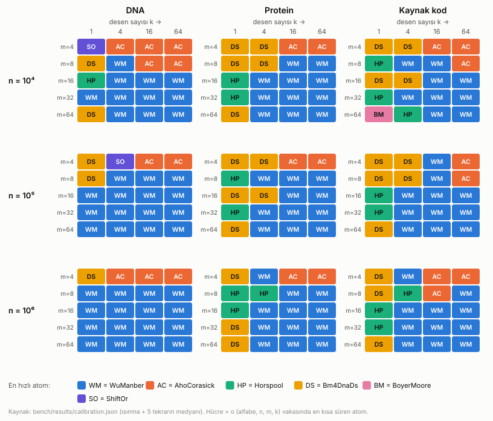
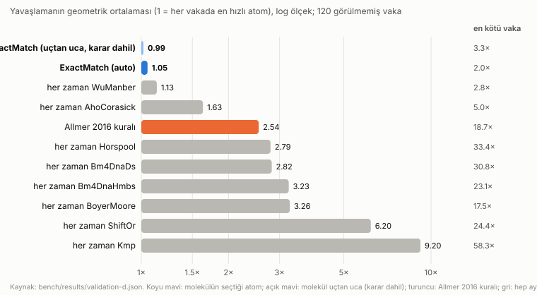
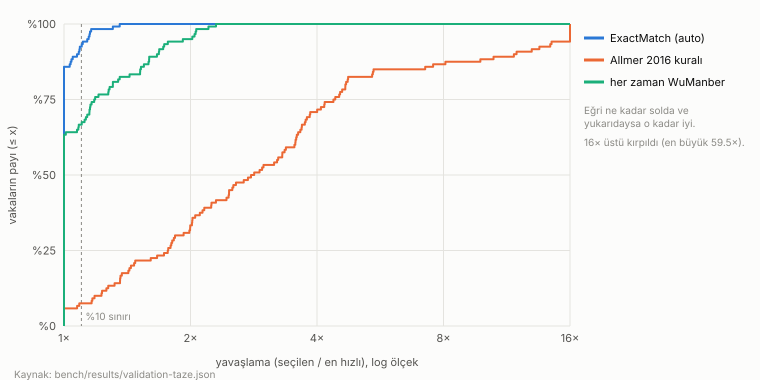

Akıllı Tam Desen Eşleştirme
Internet of Science (IoS) için yedi atom ve girdinin şekline göre seçim yapan bir molekül: sequence.pattern-match.exact
1. Ne yapar ve neden
Bir metinde (genom, protein, kaynak kod, log) bir ya da daha çok desenin geçtiği bütün yerleri bulmak, biyoinformatiğin ve yazılım araçlarının en temel işlerinden biridir. Bu işi yapan algoritmalardan hiçbiri her durumda en hızlı değildir. Kısa desende iyi olan uzun desende, tek desende iyi olan çok desende geri kalır. Bu çalışma üç şey yapar:
- Yedi yeni atom: Horspool, Shift-Or, bm4DNADS, bm4DNAHMbs (A grubu), Knuth-Morris-Pratt (B), Aho-Corasick ve Wu-Manber (C). Hepsi IoS atom sözleşmesine uyar ve 8. bir atom olan Boyer-Moore ile aynı arayüzü paylaşır.
- ExactMatch molekülü: İlk kaydın şekline (n, σ, k, desen uzunlukları) bakıp her atomun süresini kalibre edilmiş bir maliyet modeliyle tahmin eder ve en ucuzunu seçer. Atomlar bir kayıt defterinden gelir; yeni atom eklemek molekülü değiştirmez.
- Kanıt: 328 birim testi (her atom ve molekül referans uygulamayla birebir), 180 vakalık kalibrasyon ızgarası ve kalibrasyonda hiç görülmemiş 120 vakalık taze bir doğrulama kümesi.
Kapsam: Yalnızca tam eşleşme. Yaklaşık eşleşme (BLAST, Smith-Waterman, k uyumsuzluk) kapsam dışıdır. Ödevin "yazılım mühendisliğine uygulayın" isteği için aynı molekül kaynak kod ve log dosyalarında da çalışır (ios scan, Ek B). Kalibrasyona "kaynak kod" alfabesi, doğrulamaya "log" alfabesi eklendi.
2. Algoritmalar
Bütün atomlar ortak bir üst sınıftan (ExactSearchAtom, Template Method deseni) türer. Ortak sınıf parametre denetimini, ASCII ignoreCase'i, alfabe küçültmeyi ve çıktı sıralamasını yapar. Alfabe küçültmede desenlerdeki her karakter 1, 2, … numarasını alır, desende olmayan her karakter 0 olur. Tablolar 65 536 yerine σdesen+1 elemanlıdır. Aynı desen iki kez verilmişse bir kez aranır, iki kez raporlanır. Atom yalnızca prepare() ve scanText() yazar.
| Atom | Fikir | Ön işleme | Arama (tipik / en kötü) |
|---|---|---|---|
| Horspool | Pencerenin son karakterine göre kötü karakter kayması | O(m+σ) | O(n/m) / O(nm) |
| Boyer-Moore | Kötü karakter + iyi sonek, büyük olan kadar kay | O(m+σ) | alt doğrusal / O(nm) |
| bm4DNADS | Horspool + metnin sonuna desen kopyası (sentinel) + 3 kez açılmış atlama döngüsü; son karakterin kayması 0 | O(m+σ) | O(n/m) / O(nm) |
| bm4DNAHMbs | Son q karakterin bit kaydırmalı özetiyle kayma; q·⌈log₂σ⌉ ≤ 16 bit | O(m) | O(nq/(m−q+1)) / O(nm) |
| Shift-Or | Bit paralel: D = (D<<1) | maske[c]; m ≤ 32 | O(m+σ) | O(n) / O(n) |
| KMP | Başarısızlık işleviyle metinde geri dönmeden | O(m) | O(n) / O(n) |
| Aho-Corasick | Bütün desenlerden tam otomat; tek geçiş, sözlük bağlarıyla iç içe desenler | O(Σm·σ) | O(n+z) / O(n+z) |
| Wu-Manber | Çok desenli blok kayması: son B karakter → SHIFT; 0 ise kovadaki desenleri doğrula | O(Σm + tablo) | O(nB/kayma) / O(nΣm) |
Tek desenli algoritmalar (ilk beş satır ve KMP) her benzersiz desen için ayrı geçer (k geçiş). z = eşleşme sayısı.
Makaleden ve klasik tariflerden ayrılan noktalar (tamamı Ek A'da ve docs/sapmalar.md'de). Allmer 2016'nın PDF'ine bu çalışma ortamından erişilemedi. Bu yüzden bm4DNA atomları ödev tablosundaki tarife, Hume & Sunday 1991 ve Wu & Manber 1994'e göre yazıldı. Bilinen tuzaklar testlerle kapatıldı:
- bm4DNAHMbs, desende hiç geçmeyen q-gram: güvenli kayma m − q + 1'dir, m değil. Desen, pencerenin son q−1 karakterinden başlıyor olabilir. Örnek: desen
ACGTAC, q = 3, metinTTTTxACGTAC. Pencere 1–6 iken son q-gramxACdesende yok; 6 kaymak 5. konumdaki eşleşmeyi atlar. Bu hata mutasyon denetiminde bilerek yerleştirildi ve 33 test başarısız oldu (Bölüm 5). - bm4DNADS: Döngü sentinel'de durunca
j ≥ ndenetimi yapılır, sahte eşleşme raporlanmaz. Doğrulamadan sonraki kayma (shift2), son karakterin ilk m−1 karakterdeki en sağ yerinden hesaplanır. Aksi halde kayma 0 olur ve döngü sonsuza kadar döner. - Shift-Or, m > 32: Atom yanlış sonuç vermesin diye ilk 32 karakterle süzüp kalanını doğrular, ama
applicable()ile kendini "uygun değil" ilan eder; molekül onu seçmez. - Wu-Manber tablosu: İlk sürüm hep 2¹⁸ elemanlı tablo kuruyordu. 10⁴ karakterlik metinde tabloyu sıfırlamak aramadan uzun sürdü. Tablo boyu artık desenlerdeki blok sayısının ~8 katı; çakışmada en küçük (güvenli) kayma tutulur.
3. Girdi ve çıktılar, parametreler
Girdi: FASTA.Entry akışı { header: ">chr1 …", seq: "ACGT…" }.
Parametreler: patterns: boş olmayan dizgilerden oluşan boş olmayan liste. ignoreCase: yalnızca ASCII A–Z/a–z eşit sayılır. Molekülde ek olarak strategy: "auto" ya da bir atomun adı.
Çıktı: Her eşleşme için { header, pattern, position, length }.
- Konumlar 0 tabanlı, UTF-16 kod birimi; örtüşen eşleşmeler raporlanır.
- Sıra: kayıt → konum → desenin listedeki sırası. Tekrarlanan desen ayrı raporlanır.
patternverildiği gibi yazılır. Desen metinden uzunsa ya da metin boşsa sonuç boştur; boş liste ya da boş desen hata verir.- Molekül
record = { requested, selected, shape, estimates, why }; bilinmeyen strateji geçerli adları listeleyen bir hata verir.
4. Seçim yöntemi
Veri şekli (src/shape.js, ilk kayıttan): n, σ (farklı karakter sayısı), k, mMin, mMax, mMean. Bunlara etkin alfabe büyüklüğü σe = 1/Σp² eklendi: iki rastgele karakterin aynı çıkma olasılığının tersi. Beklenen kayma σ'ya değil σe'ye bağlıdır. Ölçümlerde DNA σ = 4 / σe = 4,0; protein 20 / 16,7; kaynak kod 128 / 18,1. 262 144 karakterden uzun metinde σ eşit aralıklı 64 parçadan deterministik olarak sayılır.
Maliyet modeli. Her atom şekilden "adım sayısı" özellikleri hesaplar (selection.features). Tahmini süre = Σf cf·xf. Bütün atomlarda ortak özellikler: fixed (kurulum), base = n (metni kodlama), perPattern = k, out (eşleşme sayısı). Atoma özgü olanlar: Horspool ailesi için scan = Σi n/E[kayma(mi, σe)] ve verify = scan/σe; Shift-Or ve KMP için k·n; Aho-Corasick için n ve tablo boyu (önbellek etkisi için log₂ ölçek); Wu-Manber için pencere sayısı × B, kova doğrulama sayısı ve tablo boyu; bm4DNAHMbs için q-gram pencere sayısı. E[kayma], tekdüze rastgele metin için kapalı formülle hesaplanır.
Kalibrasyon. 3 alfabe (DNA, protein, kaynak kod) × n ∈ {10⁴, 10⁵, 10⁶} × m ∈ {4, 8, 16, 32, 64} × k ∈ {1, 4, 16, 64} = 180 vaka; her vakada 8 atom (Shift-Or yalnızca m ≤ 32). Ölçüm kuralları:
- Atomlar dönüşümlü ölçüldü: her turda her atom bir kez çalışır, makinedeki anlık yavaşlama hepsini etkiler.
- Isınma turundan sonra 5 tekrarın medyanı alındı; 10 ms'den kısa ölçümler blok içinde tekrarlanıp ortalandı.
- Her tekrardan önce çöp toplayıcı çağrıldı; ızgara 167 s sürdü.
Katsayılar negatif olmayan en küçük kareler (Lawson–Hanson) ile, göreli hatayla uyduruldu. Böylece 0,05 ms'lik vaka ile 50 ms'lik vaka eşit ağırlık taşır. Eşleşme başına iş (toplayıcıya ekleme ve çıktı nesnesi) koddaki aynı parçalarla yapıldığı için out katsayısı bütün atomlarda ortak tutuldu: atom başına uydurulan değerlerin medyanı, 1,19·10⁻⁷ s. Uydurmanın medyan göreli hatası atoma göre %9 (Horspool) ile %21 (KMP) arasında (bench/results/calibration-fit.md).
Neden kural yerine model? Eşik kuralları (örn. "k ≥ 32 ise Aho-Corasick") her yeni atomda elle yeniden düşünülmelidir. Modelde yeni atom yalnızca kendi özelliklerini yazar; npm run calibrate katsayıları bulur. Uygulanamazlık (Shift-Or m > 32, Aho-Corasick tablo > 3·10⁷ hücre) applicable() ile bildirilir, nedeni record'a yazılır.
5. Nasıl test edildi
| Test dosyası | Ne sınıyor | Test |
|---|---|---|
| contract.test.js | Sözleşme, her atom için: alanlar, 0 tabanlı konum, örtüşme, sıra, tekrar eden desen, ASCII ignoreCase (İ/ı/é dokunulmaz), UTF-16 (emoji), boş girdi, hatalar, determinizm | 117 |
| atoms.test.js | Her atom için 16 özel durum (periyodik ABAB, tek harf, desen alfabesinde olmayan karakter, desen = metin, 31/32/33 sınırı, vekil çift, boşluklu metin…) ve iç parçalar (KMP, iyi sonek, shift2, q seçimi) | 135 |
| oracle.test.js | Her atom + molekül NaiveSearch ile eleman eleman: lambda genomu (kısa, uzun, 300 desen, ignoreCase, 10 kayıt), 126 E. coli proteini, 6 sentetik alfabe, ATAT…/AAAA…, 360 tohumlu rastgele vaka | 19 |
| molecule.test.js | record alanları, en ucuz seçim, zorla seçilen 9 strateji aynı sonuç, sahte atom (molekül değişmeden seçilir), uygulanamaz atom seçilmez, ilk kayda göre karar | 15 |
| forbidden / cli / core | Atomlarda indexOf, RegExp, console, Node modülü, saat, rastgelelik yok; bin/ios.js uçtan uca; FASTA, şekil, NNLS, kod tarama | 42 |
Gerçek veri: lambda faj genomu NC_001416.1 (48 502 baz) ve 126 E. coli K-12 UniProt proteini (34 004 amino asit; kaynakları tests/data/*.kaynak.tsv). Negatif kontroller: (1) Yasaklı işlev taraması, kendisine verilen kötü örnekleri yakaladığını da sınar. (2) Mutasyon denetimi (npm run mutation) koda 12 küçük hata yerleştirdi: Horspool kayması bir fazla, KMP sınırı unutur, sentinel denetimi, m − q + 1 yerine m, sıralamasız çıktı, ters sıralı molekül vb. 12'si de yakalandı: 11'inde 1 ile 81 arası test başarısız oldu, bm4DNADS mutasyonu ise sonsuz döngüye yol açtı ve testler bitmedi (docs/mutasyon.md). npm test temiz kopyada, bağımlılık kurmadan yaklaşık 3 saniyede 328/328 geçiyor.
6. Sonuçlar
Kalibrasyon ızgarası (Şekil 1). Çok desende (k ≥ 4) Wu-Manber, kısa desen ve çok desende (m = 4, k ≥ 16) Aho-Corasick kazanıyor. Tek desende ise alfabe belirleyici.
Yazılım mühendisliği verisinde ne değişiyor? Kaynak kodda 128 farklı karakter var, ama boşluk, girinti ve sık harfler yüzünden etkin alfabe yalnızca 18. Bu yüzden kodda tek desen aramasında kazanan, DNA'dakinden farklı olarak, tek karakterle kayan basit Horspool ailesi. Bir karakterin desende geçme olasılığı DNA'dakinden çok düşük ve kaymalar m'ye yaklaşıyor. 10⁶ karakterde k = 1 için Horspool'un KMP'ye süre oranı DNA'da 0,44–0,70, kodda 0,48–0,72; m = 64'te DNA 0,70, kod 0,48. Çok desende (TODO/FIXME/gizli anahtar kümeleri gibi) kodda da Wu-Manber ve Aho-Corasick kazanıyor.

Doğrulama
Doğrulama kümeleri kalibrasyonda kullanılmadı: farklı tohumlar, ızgara noktalarının arasından değerler (n 12 000–900 000, k 2–120, m 3–100, ızgara değerleri hariç), vakaların %30'unda karışık desen uzunlukları ve kalibrasyonda olmayan üç alfabe (log, ikili ab, İngilizce benzeri metin). Yavaşlama = seçilen atomun süresi / o vakadaki en hızlı atomun süresi.
| Politika (taze küme B, 120 vaka) | En hızlıyı seçme | %10 içinde | Yavaşlama (geo. ort.) | En kötü | Toplam süre / en iyi |
|---|---|---|---|---|---|
| ExactMatch (auto) | %85,8 | %92,5 | 1,016 | 1,36× | 1,032 |
| her zaman Wu-Manber | %63,3 | %66,7 | 1,139 | 2,30× | 1,218 |
| her zaman Aho-Corasick | %29,2 | %33,3 | 1,599 | 4,24× | 1,413 |
| Allmer 2016 kuralı (mMean < 50 → bm4DNADS, değilse bm4DNAHMbs) | %5,8 | %7,5 | 3,143 | 59,49× | 4,728 |
| her zaman bm4DNAHMbs | %0,0 | %0,0 | 3,446 | 24,94× | 4,275 |
| her zaman bm4DNADS | %6,7 | %10,0 | 3,500 | 59,49× | 5,668 |
| her zaman Horspool | %0,8 | %8,3 | 3,526 | 70,05× | 6,113 |
| her zaman Boyer-Moore | %0,0 | %0,0 | 3,771 | 33,13× | 4,804 |
| her zaman Shift-Or | %0,0 | %0,8 | 6,633 | 48,13× | 9,011 |
| her zaman KMP | %0,0 | %0,0 | 10,688 | 136,56× | 17,077 |

Modelin gelişimi ve dürüstlük notu. İlk doğrulama kümesi A (tohum 20261111) üzerinde iki model hatası bulundu ve düzeltildi. Katsayılar her seferinde yalnızca kalibrasyon ölçümlerinden yeniden uyduruldu; doğrulama verisine göre katsayı ayarlanmadı. Ancak düzeltmeler A'daki yanlış seçimlere bakılarak bulunduğu için A artık "görülmemiş" sayılmaz. Bu yüzden son model, hiçbir karar için kullanılmamış taze küme B'de (tohum 31415926) ayrıca ölçüldü; yukarıdaki tablo B'dir.
| Sürüm | Değişiklik | Küme | En hızlı | %10 içinde | Geo. ort. | En kötü | Toplam / en iyi |
|---|---|---|---|---|---|---|---|
| v1 | İlk model | A | %66,7 | %78,3 | 1,168 | 6,11× | 1,446 |
| v2 | Tek desenli atomların maliyeti en kısa / ortalama / en uzun desenin ortalamasıyla | A | %75,8 | %79,2 | 1,078 | 2,27× | 1,271 |
| v3 | Eşleşme başına maliyet ortak, gerçek eşleşme sayısıyla uydurulur | A | %81,7 | %88,3 | 1,038 | 1,83× | 1,007 |
| v3 | Aynı model, taze küme | B | %85,8 | %92,5 | 1,016 | 1,36× | 1,032 |
Yanlış seçimlerin analizi
- v1, karışık uzunlukta desen (A'daki en kötü 5 vakanın 5'i): Örnek vaka 90: DNA, k = 9, m = 7/3/17. Model bm4DNAHMbs seçti (3,09 ms), en hızlı Aho-Corasick'ti (0,51 ms); yavaşlama 6,1×. Neden: tek desenli algoritmaların maliyeti ortalama uzunlukla (mMean = 9) hesaplanıyordu. Toplam işi ise en kısa desen (m = 3, kayma ≈ 1) belirler. v2'de özellik Σi f(mi) ≈ k·[f(mMin)+f(mMean)+f(mMax)]/3 oldu.
- v2, ikili alfabe (kalibrasyonda görülmemiş): Vaka 52: n = 206 551, k = 3, m = 3. bm4DNAHMbs 17,6 ms tutarken Aho-Corasick 8,0 ms; yavaşlama 2,2×. Neden: out katsayısı atom başına serbestti ve 45 kat değişiyordu (bm4DNAHMbs için 1,6·10⁻⁸, KMP için 7,2·10⁻⁷). İkili alfabede eşleşme sayısı kalibrasyondakinden çok büyük olduğu için, çıktı maliyeti düşük sayılan atom yapay olarak ucuz göründü. v3'te bu katsayı ortak tutuldu.
- v3, kalan hatalar (B): En kötü vaka 81: log, n = 289 868, k = 10, m = 3. Wu-Manber 5,41 ms, Aho-Corasick 3,98 ms; 1,36×. İkinci kötü vaka 104: kaynak kod, k = 24, m = 9/5/21, 1,31×. Her ikisinde de en kısa desen çok kısa, Wu-Manber'in blok kayması küçük. Log ve kodda tekrarlı parçalar (zaman damgası, girinti) aday kova doğrulamasını, tekdüze rastgele metin varsayımının öngördüğünden sık yapıyor. Wu-Manber ile Aho-Corasick sınırı mMin ≤ 5'te en belirsiz bölge.
Tek desenli ek küme C. B'de k en az 2 olduğu için tek desen ayrıca denendi: 120 vaka, k = 1, tohum 27182818, n ve m ızgara arasından (k = 1 ızgarada da var; bu yüzden C k bakımından "ızgara arası" değildir). Model değiştirilmeden bir kez ölçüldü. Tek desende atomlar birbirine çok yakın ve seçim belirgin biçimde zayıflıyor; molekül yine bütün politikalardan iyi, ama fark küçük. Zayıf nokta ikili alfabe: geo. ort. 1,194 (diğer alfabelerde 1,025–1,065), en kötü 5 vakanın 5'i ikili.
| Politika (küme C, k = 1, 120 vaka) | En hızlıyı seçme | %10 içinde | Geo. ort. | En kötü | Toplam / en iyi |
|---|---|---|---|---|---|
| ExactMatch (auto) | %51,7 | %79,2 | 1,073 | 2,10× | 1,095 |
| her zaman Wu-Manber | %30,8 | %47,5 | 1,224 | 3,27× | 1,276 |
| her zaman Horspool | %32,5 | %61,7 | 1,272 | 4,61× | 1,259 |
| Allmer 2016 kuralı | %26,7 | %53,3 | 1,276 | 3,89× | 1,239 |
| her zaman bm4DNADS | %29,2 | %59,2 | 1,297 | 4,79× | 1,287 |
Molekülün kendi yükü. Yukarıdaki tablolar ödevin tanımıyla seçilen atomun süresini karşılaştırır. Karar için şekli hesaplamak ve tahmin yapmak, uçtan uca sürede seçilen atoma göre B'de medyanda %14 ek getirdi (%90'lık dilimde %68; bu dilimdeki vakalarda seçilen atom çoğunlukla 1,3 ms'den kısa sürüyor). Bu yük dahil edilince molekülün B'deki yavaşlama geo. ortalaması 1,187 olur ve "her zaman Wu-Manber"in 1,139'undan kötüdür; toplam süre oranında ise molekül yine iyidir (1,169'a karşı 1,218). C'de yük medyanda %59; uçtan uca geo. ort. 1,686, "her zaman Horspool" 1,272. Nedeni: şekil sayımı metni (262 144 karaktere kadar) bir kez tam okur; tek desen araması ise metnin yalnızca bir kısmına bakar. Örnek: 200 000 karakterlik proteinde sayım 0,76 ms, seçilen Horspool'un kendisi 0,51 ms.
7. Sınırlar
- Karar ilk kayda göre verilir (sözleşme gereği). İlk kayıt kısa, sonrakiler çok uzunsa seçim kötü olabilir; bu durum
molecule.test.js'te bilerek gösteriliyor. Kaynak kod taramasında ilk dosya küçükse aynı risk geçerli. - Özellikler tekdüze rastgele metin varsayar. σe sıklık farkını yakalar ama tekrarlı yapıyı (log zaman damgaları, kod girintisi) yakalamaz. Kalan yanlış seçimler buradan geliyor.
- Kalibrasyon ızgarasında desenlerin hepsi aynı uzunlukta. Karışık uzunluk davranışı yalnızca formülle (üç nokta yaklaşımı) aktarılıyor, ölçülerek öğrenilmiyor.
- Ölçümler tek bir paylaşımlı bulut makinesinde yapıldı. Katsayılar makineye özgü; teslimden önce
npm run calibratevenpm run benchyeniden çalıştırılmalı. 0,1 ms'nin altındaki farklar yorumlanmadı. En hızlı atomun ≥ 1 ms sürdüğü 62 vakalık alt kümede sonuç benzer: %80,6 en hızlı, geo. ort. 1,024, en kötü 1,36×. - Hiç kazanmayan atomlar: Bu uygulamada Boyer-Moore, Shift-Or, KMP ve bm4DNAHMbs doğrulamada hiçbir vakada en hızlı olmadı. Shift-Or ve KMP desen başına ayrı geçer. bm4DNAHMbs'nin q-gram özeti JavaScript'te her pencere için q okuma gerektiriyor; uzun DNA deseninde aynı işi Wu-Manber'in blok tablosu daha ucuza yapıyor. Allmer kuralının kötü sonucu (geo. ort. 3,14) bu uygulamaya özgüdür; C'deki özgün uygulama için genelleme yapılamaz.
- Karar maliyeti küçük girdide ve tek desende ağır. Örnekleme sınırını düşürmek (ör. 64 parça × 256 karakter) bu yükü küçültür: ölçtüğümüz 47 metinde σe hatası medyanda %0,03, en kötü %6; farklı karakter sayısı σ ise en fazla %23 eksik sayıldı. Bu değişiklik doğrulamadan sonra bulunduğu için uygulanmadı; uygulanırsa katsayılar yeniden uydurulmalı ve yeni bir taze kümede ölçülmelidir.
- Bellek modelde yok. Aho-Corasick için yalnızca bir üst sınır var (3·10⁷ hücre).
8. Nasıl kullanılır
npm test # 328 test, ~3 sn, bağımlılık yok npm run calibrate && npm run bench # katsayıları yenile, doğrula (bench/results/) node bin/ios.js run ExactMatch --patterns GATC,GGATCC --strategy auto < tests/data/lambda_NC_001416.fa > cikti.jsonl node bin/ios.js explain --patterns GATC,GGATCC < tests/data/lambda_NC_001416.fa node bin/ios.js run KmpSearch --patterns acgt --ignoreCase < girdi.fasta # bir atomu adıyla node bin/ios.js scan --preset secrets --fail src/ # kodda gizli bilgi izi → çıkış kodu 1
Lambda genomunda explain çıktısından (kısaltılmış): "selected": "BoyerMooreSearch", "shape": {"n": 48502, "sigma": 4, "sigmaEff": 3.992, "k": 2, "mMin": 4, "mMax": 6, "mMean": 5}, tahminler (ms): Boyer-Moore 0,455; bm4DNADS 0,457; Horspool 0,477; Aho-Corasick 0,535; Shift-Or 0,551; KMP 0,590; Wu-Manber 0,604; bm4DNAHMbs 0,983. run 121 eşleşme yazar; ilki {"pattern":"GATC","position":415,"length":4}.
Ek A. Makaleden ve klasik tariflerden sapmalar
| # | Atom | Uygulama | Neden |
|---|---|---|---|
| H1 | bm4DNAHMbs | Desende olmayan q-gram için kayma m − q + 1 | m kadar kaymak, pencerenin son q−1 karakterinden başlayan eşleşmeyi atlar (Bölüm 2'deki örnek). |
| H2 | bm4DNAHMbs | Son q-gram için tabloda 0; doğrulamadan sonra ayrı hesaplanan shift2 | Tablodaki 0 doğrulamadan sonra da kullanılırsa döngü yerinde sayar. |
| H3 | bm4DNAHMbs | Karakter başına ⌈log₂ σ⌉ bit; DNA için 3 bit, q = 5; özet çakışmasız | 0 kimliği "desende olmayan karakter" için ayrıldığından DNA 2 bite sığmaz. |
| H5 | bm4DNAHMbs | Bütün desenler tek tabloyu paylaşır; her desen yalnızca kendi girdilerini yazar ve siler | Desen başına 64 K tablo, çok desende belleği ve kurulum süresini patlatır. |
| D1 | bm4DNADS | Metin kodlanırken sona en uzun desen kadar boş yer; her desen kendi sentinel'ini yazar | Sentinel metne yazılırsa sonraki desen bozuk metinde arar. |
| D2 | bm4DNADS | Döngü durunca j ≥ n denetimi | Sentinel her zaman "eşleşir"; denetimsiz sahte sonuç çıkar. Mutasyonda (j > n) m = 1 için döngü dizinin dışına taşıp bitmiyor. |
| D4 | bm4DNADS | shift2 son karakterin ilk m−1 karakterdeki en sağ yerinden | Son karakter sayılırsa kayma 0, sonsuz döngü. |
| S1 | Shift-Or | m > 32: süzgeç + doğrulama; applicable() = uygun değil | Atom her girdide doğru olmalı; bit paralel avantajı kaybolduğu için molekül seçmez. |
| W1 | Wu-Manber | Tablo boyu ≈ 8 × desen bloğu (2⁸–2¹⁸); küçük alfabede birebir indeks, değilse karma; çakışmada en küçük kayma | Büyük sabit tablo küçük metinde aramadan pahalı; en küçük kayma doğruluğu korur. |
Ek B. Yazılım mühendisliği uygulaması
src/adapters/sourceToEntry.js bir kaynak dosyayı { header: ">yol", seq: içerik } kaydına çevirir (Adapter deseni). Atomlara dokunulmadan aynı altyapı kodda çalışır. src/workflows/CodeScan.js molekülü kullanır ve konumları satır ve sütuna çevirir (satır başları hazır işlev kullanmadan bulunur, ikili aramayla eşlenir). Hazır kümeler: todo (TODO, FIXME, HACK, XXX), secrets (password=, api_key, AKIA, özel anahtar başlıkları; büyük/küçük harf duyarsız), banned-api (eval(, exec(, pickle.loads, os.system(, innerHTML…), errors (log hataları). --fail bulgu varsa çıkış kodu 1 döndürür; sürekli entegrasyonda derlemeyi durdurmak için kullanılır. Bu deponun Agora projesinde ios scan --preset banned-api ../forum komutu static/app.js içinde 3 innerHTML kullanımı buldu; seçilen atom Horspool. Kaynak kodda boşluk anlamlı olduğu için korunur (FASTA'da seq boşluksuzdur; atomlar her ikisinde de doğru çalışır).
Ek C. Tasarım notu
| İlke / desen | Nerede | Ne kazandırıyor |
|---|---|---|
| Template Method | src/atomic/ExactSearchAtom.js (process iskelet; prepare, scanText, padding kancalar) | Sözleşme kuralları tek yerde; atom yalnızca algoritmasını yazar. |
| Strategy | Her atom bir arama stratejisi; ExactMatch çalışma anında birini seçer | Aynı arayüz, birbirinin yerine takılabilir uygulamalar. |
| Registry + Açık/Kapalı ilkesi | src/registry.js; ExactMatch.js'te atom adı geçmez (testle denetlenir) | Yeni atom = yeni dosya + bir satır; molekül değişmez. |
| Adapter | src/adapters/sourceToEntry.js | Kod/log dosyaları FASTA.Entry'ye çevrilir. |
| Saf çekirdek / ince kabuk | src/functions (yalnızca sayı dizileri), G/Ç yalnızca bin/ios.js'te | Atomlar tarayıcıda da çalışır; test edilmesi kolay. |
Ek D. Ek sonuçlar

| Alt küme (B) | Politika | Vaka | En hızlı | %10 içinde | Geo. ort. | En kötü |
|---|---|---|---|---|---|---|
| Görülen alfabeler (DNA, protein, kod) | ExactMatch | 60 | %88,3 | %95,0 | 1,013 | 1,31× |
| Görülen alfabeler | Allmer 2016 | 60 | %8,3 | %10,0 | 3,238 | 38,34× |
| Görülmeyen alfabeler (log, ikili, metin) | ExactMatch | 60 | %83,3 | %90,0 | 1,019 | 1,36× |
| Görülmeyen alfabeler | Allmer 2016 | 60 | %3,3 | %5,0 | 3,051 | 59,49× |
Ham ölçümler: bench/results/calibration.json, validation.json (A, v3), validation-v1.json, validation-v2.json, validation-taze.json (B), validation-tek.json (C, k = 1). Tablolar aynı adlı .md dosyalarında. Makine: Intel Xeon 2,30 GHz, 4 çekirdek, 16 GB, Linux 6.18, Node v22.23.4; ölçümlerde --expose-gc açık.
Ek E. Kaynaklar
- Allmer J. (2016). Exact pattern matching: Adapting the Boyer-Moore algorithm for DNA searches. PeerJ PrePrints 4:e1758v1. (Bu çalışma ortamından erişilemedi; Bölüm 2.)
- Boyer R. S., Moore J. S. (1977). A fast string searching algorithm. CACM 20(10).
- Horspool R. N. (1980). Practical fast searching in strings. Software: Practice and Experience 10(6).
- Hume A., Sunday D. (1991). Fast string searching. Software: Practice and Experience 21(11).
- Knuth D., Morris J., Pratt V. (1977). Fast pattern matching in strings. SIAM J. Computing 6(2).
- Baeza-Yates R., Gonnet G. H. (1992). A new approach to text searching. CACM 35(10).
- Aho A. V., Corasick M. J. (1975). Efficient string matching. CACM 18(6).
- Wu S., Manber U. (1994). A fast algorithm for multi-pattern searching. TR-94-17, University of Arizona.
- Lawson C. L., Hanson R. J. (1974). Solving Least Squares Problems. Prentice-Hall (NNLS).
- Charras C., Lecroq T. Exact String Matching Algorithms (çevrimiçi el kitabı; iyi sonek tablosu kuruluşu).
- Veri: NCBI NC_001416.1 (bowtie2 deposundaki kopya); UniProtKB/Swiss-Prot E. coli K-12 kayıtları (GitHub'daki açık FASTA dosyaları,
tests/data/*.kaynak.tsv).
Ek F. Yapay zekâ kullanımı
Kod, testler, ölçüm betikleri, şekiller ve bu rapor bir yapay zekâ kodlama aracıyla (Claude Code) üretildi. Bütün sayılar bu çalışma sırasında çalıştırılan komutların çıktısından alındı (Ek D'deki dosyalar). Dersin yapay zekâ politikası (izinli / kısıtlı / yasak) henüz belli değildir; öğrenildiğinde bu bölüm güncellenecektir. Sunumda her bölümün anlatılabilmesi için docs/anlatim.md hazırlandı.